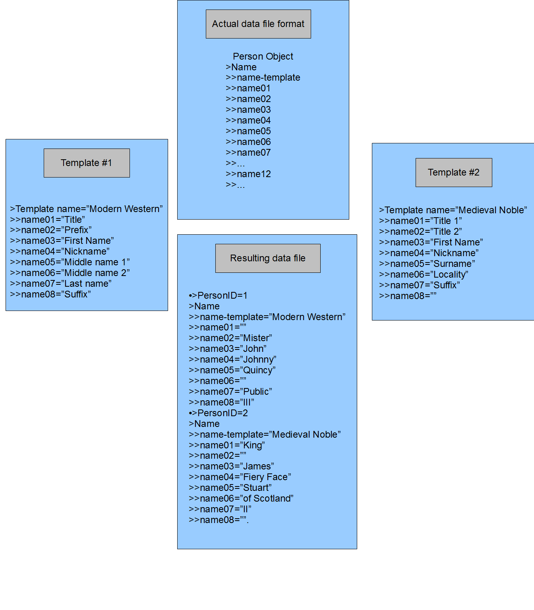

Use of Templates
Templates can be used to afford both users and developers maximum flexibility in using the BetterGEDCOM standard's components. This section discusses the use of templates in various sections of the BetterGEDCOM Standard. Application of the idea of templates can vary but is very similar in all situations.
Use Of Templates For Names
This section addresses templates specifically in person-name attributes within person entities. This template idea can also be applied to a wide variety of similar data types, such as time/date/calendar data, place data, and source element data, among others.
Why is this important?
Use of templates retains the integrity of the data structure and types while providing complete flexibility in the formatting and use of data sub-elements. This gives both users and software developers the maximum ability to use and define parts of a name, in this example, as they feel is most appropriate and effective. For software developers, this means they could use their software's established usage conventions, if any, while easily mapping these conventions to the new BetterGEDCOM standard in such a way as to be easily understood and adjustable. This would also allow nocive users the least amount of worry about how to map these data elements properly, if software developers properly indicate their software's usage conventions. For the advanced user, this would allow them to define name elements in less common or unfamiliar circumstances and be able to pass these usages on to the recipient of the data file.
This example is meant only to address templates for specific parts of each object at present. For example, the illustrations dealing with persons are not meant to address other subjects like the “person-evidence” or “person-conclusion” ideas floating around elsewhere. Also, there are other components needed in a person entity that are not addressed such as a date/time component, an identification numbering system, etc.
There could be as many templates as the software application chooses to allow or use. Implementation of this feature would be up to the software vendors. Templates could be placed in the actual data file, in a separate vendor-defined template file, in an independent template file defined by the BetterGEDCOM Project (or any other entity), or a combination of all these. Such inclusion of different data formats is a common feature of XML's functionality.
XML Data syntax is not used in order to introduce the template concept without addressing other issues.
